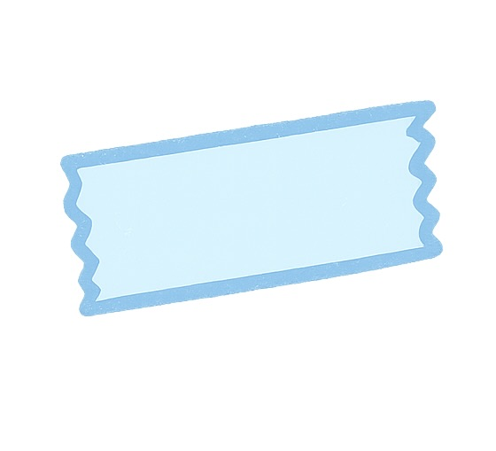
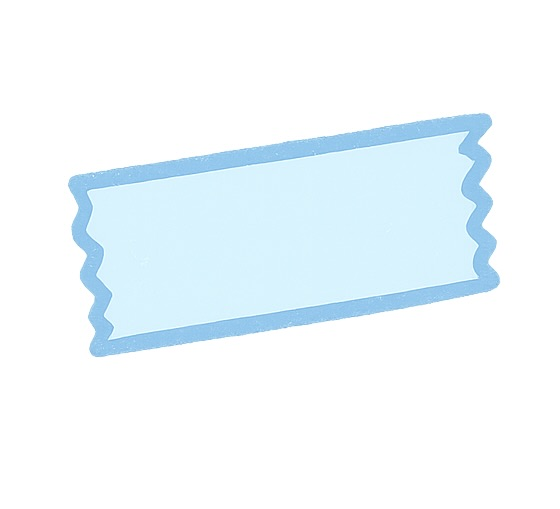

Applicant Information ✧
Preferred Full Name: Isha Jannu
Pronouns: she/her/hers
Current UT Address: 2011 San Antonio Street APT 1817 Austin, TX 78705
Phone Number: 2145856729
Email Address: ishajannu@utexas.edu
UT eid: isj283


 

Texas Bluebonnets Application — show & tell ✨
Preferred Full Name: Isha Jannu
Pronouns: she/her/hers
Current UT Address: 2011 San Antonio Street APT 1817 Austin, TX 78705
Phone Number: 2145856729
Email Address: ishajannu@utexas.edu
UT eid: isj283
Cumulative GPA: 3.23
Year: Sophomore
Major: Computer Science
As a sophomore, I want to meet people outside my major that value the same things as me, and I think CLASS fulfills that perfectly. This was the one place, at your info sessions, that I felt was genuine because I'm an introvert and you all truly made me feel comfy being myself.
I'm really passionate about youth literacy after volunteer tutoring for years and I’m grateful to have grown up emphasizing the value of education. Realizing that illiteracy is an epidemic made me want to advocate for it, through a TEDxYouth event. I also have spent many hours at the North Texas Food bank with my family and have continued that path of aiding food insecurity here at UT, through an org called ATX Food Hub. As the map improvement lead, we were able to provide a centralized hub to consolidate discounted/free food resources for students and Austinites– that’s why I’m especially excited if I continued that journey with Bluebonnets. Additionally, I’m currently redesigning Project Advance Austin that’s working with the Dress for Success nonprofit.
Being genuine — because I'm an introvert and it's so hard to open up to people who I don't feel are being genuine :(
What are you most passionate about in your life right now?Living life to the fullest before I’m stuck in a corporate job.
I'm really passionate about youth literacy after volunteer tutoring for years and I’m grateful to have grown up emphasizing the value of education. Realizing that illiteracy is an epidemic made me want to advocate for it, through a TEDxYouth event. I also have spent many hours at the North Texas Food bank with my family and have continued that path of aiding food insecurity here at UT, through an org called ATX Food Hub. As the map improvement lead, we were able to provide a centralized hub to consolidate discounted/free food resources for students and Austinites– that’s why I’m especially excited if I continued that journey with Bluebonnets with Sunday Lunchbox. Additionally, I’m currently part of Project Advance Austin working with Dress for Success nonprofit. I'm majoring in computer science because I want to develop tech to improve everyday life (sorry if I sound corny but it's true).


What is your favorite thing about yourself? Spontaneity — making time for people I care about
If you could travel anywhere right now: Remote mountains
Best piece of advice you've received: YOLO — my friend always reminds me experiences > money
What kind of music do you listen to when in a great mood? Throwback :))
If you had $1000, what would you spend it on? Food & gifts 💖
If all animals were the same size, what would win in a fight? A mouse bc too cute to eat 🐭
If you could time travel to the Victorian Era, what modern item would you show them? A vibrator 💖 for women’s independence
Death row meal? Pasta + mom’s chicken biryani + chocolate cake 😋
Here’s a peek into some of my favorite adventures! Can’t wait to share more with the Bluebonnets ✨


I love matcha! From creamy lattes to desserts, I’m basically obsessed. If there’s a new matcha spot in Austin, I’m probably there 😋💚
I love exploring cultures through food, art, and stories. I deeply admire the Bluebonnets’ commitment to DEI — creating a welcoming space for everyone is 💖.